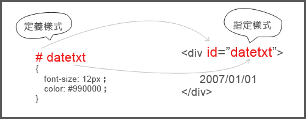
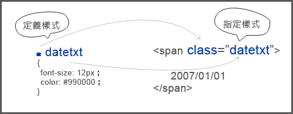
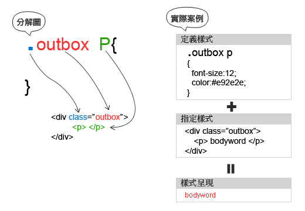
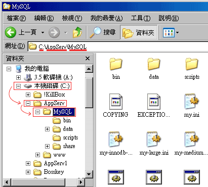

CSS 語法教學 |
|
| CSS 語法教學 CSS 語法 CSS 套用方式 CSS 媒體類別 CSS 串接 CSS 繼承 CSS Class 與 ID CSS Div 與 Span CSS 長度單位 CSS 盒子模式 CSS 邊界 (Margin) CSS 邊框 (Border) CSS 留白 (Padding) CSS 背景 (Background) CSS 顏色 CSS 字體 CSS 連接 CSS 清單 (List) CSS 表格 (Table) CSS 位置 (Position) CSS 文字 (Text) CSS 浮動 (Float) CSS 清除 (Clear) CSS 滑鼠游標圖案 CSS 樣式 | CSS 的全名為 Cascading Style Sheets，是一種樣式表 (Stylesheet) 語言。它的目的是為了對像 XHTML 及 HTML 之類的標記語言 (markup language) 提供一個顯示層。有了 CSS，我們就可以將資料層及顯示層分開：HTML 文件就只包括資料，而 CSS 則是告訴瀏覽器這些資料應該要如何顯現出來。 在不久前，只有站長需要懂得 CSS。可是，現在由於個人部落格的興起，CSS 已成為了一個眾人須知的電腦語言。無論您是自己設站寫部落格，或是您是利用 BSP (如無名、天空、Pixnet、Xuite、Blogger、及 Wordpress 等)，甚至您已經從網路上CSS無名樣式分享的網站找到了您想要的 CSS 樣式，您都很有可能需要修改一下 CSS ，這樣子才能夠讓您的部落格有自己的特色。這個 CSS 語法教學，正是學習基礎 CSS 最佳的地方。 這個 CSS 語法教學分為以下三個部分：
CSS 常用的定義方式標籤元素 <> ID = # Class = . ◎id使用(獨立定義)：從下圖各位可以很清楚的看出來，當看到#時就找id，#後的文字需與id=""內的文字相同。  ◎class使用(群組定義)：從下圖各位可以很清楚的看出來，當看到.時就找class，.後的文字需與class=""內的文字相同。  CSS也有階層的結構  階層概念近似於檔案總管，找尋下層則是利用符號來標示，而CSS則是利用『空一格』作為下層的標示。 
下一頁： CSS 語法 |
|---|---|